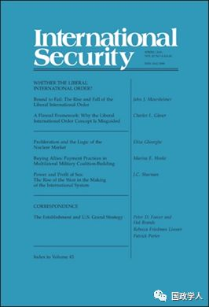
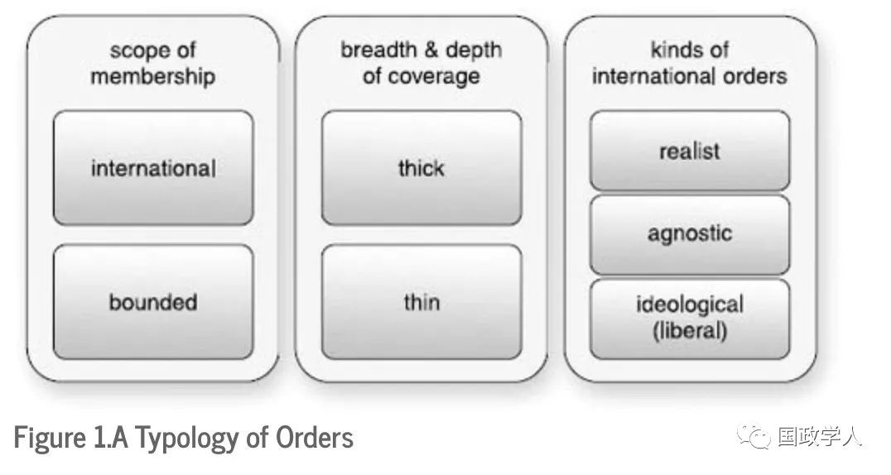

收录于合集

简 介
【作者】
约翰 · 米尔斯海默 （John Mearsheimer，1947年12月14日－），美国著名的政治学家，芝加哥大学罗兰·温德尔·哈里森杰出服务教授（R. Wendell Harrison Distinguished Service Professor）。
【编译】 朱文菡
【审校】 丁伟航
【来源】
Mearsheimer, J.J., Bound to Fail: The Rise and Fall of the Liberal International Order. International Security, 2019. 43(4): p. 7-50. Posted Online April 29, 2019.
© 2019 by the President and Fellows of Harvard College and the Massachusetts Institute of Technology.
【期刊】
《国际安全》（International Security）是国际和国家安全领域的同行评议顶级学术期刊。它成立于1976年，由哈佛大学贝尔弗科学与国际事务中心(Belfer Center for Science and International Affairs at Harvard University)编辑，麻省理工学院出版社(MIT Press)每年出版四次。2017年影响力因子为4.135，在“国际关系”类别的85种期刊中排名第2位。

注定失败：自由主义国际秩序的兴衰
Bound to Fail: The Rise and Fall of the Liberal International Order
约翰 · 米尔斯海默 （John Mearsheimer）
内容提要
本文指出 2019年是冷战后形成的自由主义国际秩序崩溃之年。作者分析了这一秩序失败的原因，并指出在新的多极世界将存在三个现实主义秩序：一个促进国际合作的“薄秩序”（a thin international order），以及两个“厚有界秩序” （two thick bounded orders）——它们分别由中国和美国领导，且二者存在经济和军事领域的安全竞争。
文章导读
**1
**
引 言 ****
本文提出了三组主要论点。
首先，秩序对于促进有效和及时的互动至关重要。不同类型的秩序主要取决于全球的权力分配。但在单极格局中，主导国家的意识形态也很重要。 自由主义国际秩序只能出现在主导国家是自由民主政体的单极格局中。
**
**
其次 ，自第二次世界大战以来，美国领导了两个不同的秩序。冷战秩序是一个现实主义有界秩序。它具有与自由秩序一致的某些特征，但这些属性是基于现实主义逻辑的。而以美国为首的冷战后秩序是自由主义国际秩序，因此在根本上与有界秩序不同。
第三，冷战后的自由主义国际秩序注定要崩溃，因为它所依赖的关键政策存在严重缺陷。在全球范围内传播自由民主，对于建立这一秩序至关重要，但由于与民族主义对立，这项事业是不可实现的。
此外，寻求最大限度地减少全球贸易和投资壁垒的高度全球化导致整个自由世界失去就业、工资下降和收入不平等加剧。这也使国际金融体系稳定性较差，导致经常性金融危机。这些麻烦随后演变成政治问题，进一步削弱了西方世界内部对自由主义秩序的支持。另一方面，高度全球化帮助其他国家变得强大，这将破坏单极格局，终结自由主义秩序。随着中国的崛起和俄罗斯政权的复兴，单极时代结束。 新的多极格局将包括一个以现实主义为基础的国际秩序，它将在管理世界经济，处理军备控制和气候变化等全球公域问题方面发挥重要作用。除了这一新的国际秩序外，美国和中国还将分别主导有界秩序，在经济和军事领域相互竞争 。
**
**
本文的其余部分组织如下。 首先，作者解释了“秩序”一词的含义以及为什么秩序是国际政治的一个重要特征。其次，作者描述了不同类型的秩序以及自由主义国际秩序出现的背景。对应地，作者在第三部分研究了国际秩序兴衰的原因，并叙述了冷战秩序和自由主义国际秩序的历史。随后，作者解释了自由主义国际秩序失败的原因。最后，作者将讨论新秩序在多极化下的样子，并进行简要总结和提出一些政策建议。
**2
**
秩序与秩序的类型
作者认为秩序是由大国主导的，是大国根据自身利益设计和同意遵循的有效规则。当规则不符合规则制定者的重要利益时，大国要么忽略它们，要么重写它们。秩序在现代国际体系中不可或缺，一方面由于世界本身高度融合相互依存，另一方面也有助于大国以适合大国利益的方式管理弱国的行为。
作者从三个角度分类秩序。一是从成员国的范围来说，可以分为包含所有主要国家的国际秩序（ international orders ）和仅包含部分大国的有界秩序（ bounded orders ）。二是分为现实主义秩序、意识形态秩序和不可知秩序。现实主义秩序单一的对应着两极和多极格局；而单极格局下的秩序则取决于主导大国的意识形态，自由主义秩序就属于这一类；如果单极不具有普遍主义意识形态，因此不致力于将其政治价值观和管理制度强加于其他国家，那么秩序将是不可知的。三是从国际制度覆盖范围上，将兼具深度和广度的称为 “ 厚秩序 ” （ thick order ），反之就是 “ 薄秩序 ” （ thin order ）。
**
**

**3
**
历史梳理
**
**
**
**
没有国际秩序永远存在，这引出了一个问题：现有秩序的消亡和新秩序的崛起是什么？作者认为，从冷战后到上世纪 80 年代末，是由美苏分别主导的两个现实主义有界秩序，而自上世纪 90 年代至今是美国领导的单极格局下的自由主义国际秩序。 权力分配和主导国家意识形态，解释了现实主义和不可知秩序的衰落，以及自由主义秩序是如何取代它们的。尽管这两个因素也有助于解释意识形态秩序的消解，但民族主义和势力均衡通常在导致其崩溃上起着核心作用。
美国及其盟国在冷战期间建立了强大的秩序。这不是自由主义国际秩序，而是一个有界秩序，其主要目的是与以苏联主导的有界秩序进行军事领域的安全竞争。这两个秩序都是现实主义的厚秩序。在这个过程中，美苏也帮助加强了冷战国际秩序，尽管它仍然是一个薄秩序。联合国可能是冷战国际秩序中最明显的机构，但在冷战期间它对世界各国的行为几乎没有影响，主要是因为超级大国之间的竞争使得该机构几乎不可能采取和执行相应的政策。
冷战结束后，单极格局的到来让美国领导的胜利西方主导建立了一个真正的自由主义国际秩序。从老布什的“世界新秩序”到比尔克林顿雄心勃勃的民主推广计划，作为唯一的超级大国，美国致力于将有界现实主义秩序转变为国际自由主义秩序。在20世纪90年代和本世纪的最初几年，自由主义秩序看起来欣欣向荣。北约东扩，中国和俄罗斯也积极融入WTO等美国主导的经济秩序，美国政府为消除恐怖主义推动大中东地区的所有国家变为自由民主国家。当时西方人普遍认为，世界上几乎每个国家最终都会成为一个自由民主国家——这一信念导致弗朗西斯·福山认为这可能是 “历史的终结” 。
但从2005年左右起，自由主义秩序遇到严重问题——奥斯陆和平进程失败，埃及军事政变，中东乱局，乌克兰危机，特朗普的欧洲政策等等。这些问题日积月累，直到它开始崩溃。自2006年以来，自由民主国家的数量一直在下降，扭转了曾经不可阻挡的趋势。对应地，软威权主义似乎已成为自由民主的有吸引力的替代方案。这一结果是可预见的，因为自由主义秩序内包含着自我毁灭的种子。
**4
**
****反思自由主义国际秩序
**
**
美国及其盟国建立自由主义国际秩序的企图面临三个主要问题。首先，它要求该体系中的自由主义国家，特别是美国，追求一种高度修正主义和野心勃勃的政权更迭政策，这种政策几乎肯定会在一个强调主权和自决的民族主义时代失败。 建立自由主义国际秩序的最重要要求是广泛传播自由民主，这种努力从一开始就注定要失败。究其原因，一方面，关于什么构成理想政治制度，从来没有也永远不会达成普遍协议；另一方面，民族国家不希望其他民族国家告诉他们如何制定政治制度。这种多样性意见与民族主义相结合，使得在全世界范围内传播自由民主的过程极为困难。
其次，通过推动人民跨境自由流动以及向国际机构让渡实质性决策权，不断扩大的自由秩序在自由主义国家内部造成了重大的政治问题。 “这种国际权威扩张的累积效应，”杰夫科尔根和罗伯特基奥内写道，“是过度限制主权，让人们感觉到外国势力正在控制他们的生活。”这种制度影响不可避免地引发了对“民主赤字”的担忧。这些国家的选民开始认为，遥远的官僚做出对选民来说很重要的决策时，是不可接受和无法理解的。比如在英国2016年脱欧公投中 “夺回控制权” 就是一大主题。
第三，尽管一些人和国家从高度全球化中受益，但它最终在自由民主国家内部引起了重大的经济和政治问题 ，包括失去工作、工资下降或停滞不前以及显著的收入不平等，最终导致对自由主义国际秩序的支持严重受损。并且由于没有财政和政治联盟，欧元最终将受到严重困扰，尽管这一问题暂时得到缓解，但当它卷土重来时，将会进一步破坏欧盟和自由主义国际秩序。
与此同时，高度全球化带来的经济活力帮助中国迅速将自己变成一个大国，而俄罗斯正在重新建立自己的大国地位。全球权力均势的转变终结了单极格局这一自由主义秩序的先决条件。随着中国和俄罗斯复兴的崛起，国际体系已经变得多极化，这是自由主义国际秩序的丧钟。
**5
**
我们向何处去？
在新兴的多极世界中，可能会有三种不同的现实主义秩序：薄国际秩序和两个厚有界秩序——一个由中国主导，另一个由美国主导。薄国际秩序会致力于管理世界经济，推动并维护军备控制。此外，中国领导的和美国领导的有界秩序，可能推动二者间几乎肯定会发生的安全竞争。军事联盟将成为这两个秩序的核心组成部分，这两个秩序现在已经开始形成，并将类似于冷战时期由苏联主导和美国主导的秩序。 经济领域不同于冷战时期的隔绝状态。经济贸易会形成有界秩序，双方既有竞争也有合作。但由于经济实力是军事实力的支撑，因此特朗普政府对中国的严厉经济政策只是美国主导和中国主导的秩序之间长期激烈竞争的开始。而亚洲基础设施投资银行（AIIB）很可能成为中国主导的有界秩序的核心部分。
**
**
在摒弃了苦心经营的自由主义国际秩序后，美国应如何行动？
**
**
首先，它应该抵制任何试图通过改变政权来强行在全球范围内传播民主的诱惑。 由于美国将被迫与中国和俄罗斯进行权力政治的平衡，因此其在国外从事社会运动的能力将受到严重限制。然而，重塑世界的诱惑将永远存在，因为美国如此热切地相信自由民主。但它应该抵制这种诱惑，因为进行自由主义的十字军东征肯定会导致严重的麻烦。
其次，美国应该寻求最大限度地发挥其对构成新兴国际秩序的经济制度的影响力。 这样做对于在不断变化的全球权力分配中保持尽可能有利的地位非常重要。毕竟，经济实力是军事力量的基础。华盛顿必须阻止中国主宰这些机构，并利用由此产生的影响力以美国的代价获取权力。
第三，美国政策制定者应该确保他们制定一个可以包含中国扩张的强大有界秩序。 这要求建立经济机构，如跨太平洋伙伴关系和在冷战期间与北约类似的亚洲军事联盟。在这个过程中，美国应该竭尽全力挑拨俄罗斯与中国的关系，并将其纳入美国领导的秩序。
总而言之，美国外交政策机构是时候认识到自由主义国际秩序是一项没有前途的失败事业了。在可预见的未来，真正重要的与时俱进的秩序是服务于美国利益的现实主义秩序。
** 官网链接：** ** _
** The MIT Press**
_**
https://www.mitpressjournals.org/doi/full/10.1162/isec_a_00342
_ ** _ 本文由国政学人平台独家编译首发，转载需授权**
更多阅读
【重磅推荐】巴里·布赞：英国学派视角下的中国崛起 | 国政学人
【国际地位】ISQ杂志：承认国际地位：一种关系方法 | 国政学人
【合法性研究】为什么国家合法性信仰与国际合法性信仰有关？ | 国政学人
【世界秩序】IO杂志：嵌入修正主义：网络、制度与对世界秩序的挑战 | 国政学人
国政学人 （ID：guozhengxueren)
为方便学人及时阅读高质量文章
别忘把国政学人设置 星标 哦~